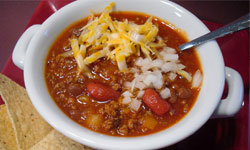

Texas Chili Recipe
Called a "bowl of red" deep in the heart of Texas, this chili is usually served with the beans on the side. For those who like their chili with a bit more fire, use a hotter salsa or even a few dashes of hot pepper sauce. This dish is even better when it's prepared a day ahead, chilled and brought back to a simmer before serving.
Ingredients Required
- 1 pound boneless beef chuck shoulder, cut into 1/2-inch pieces
- 2 cups chopped onions
- 5 cloves garlic, minced
- 2 tablespoons chili powder
- 1 tablespoon ground cumin
- 1 teaspoon ground coriander
- 1 teaspoon dried oregano leaves
- 2-1/2 cups fat-free reduced-sodium beef broth
- 1 cup salsa or picante sauce
- 2 cans (16 ounces each) pinto or red beans (or one can of each), rinsed and drained
- 1/2 cup chopped fresh cilantro
- 1/2 cup fat-free sour cream
- 1 cup chopped ripe tomatoes
Step by Step Procedure
- Spray Dutch oven or large saucepan with cooking spray; heat over medium-high heat until hot. Add beef, onions and garlic; cook and stir until beef is no longer pink, about 5 minutes. Sprinkle mixture with chili powder, cumin, coriander and oregano; mix well. Add beef broth and salsa; bring to a boil. Cover; simmer 45 minutes.
- Stir in beans; continue to simmer uncovered 30 minutes or until beef is tender and chili has thickened, stirring occasionally.
- Stir in cilantro. Ladle into 8 bowls; top evenly with sour cream and tomatoes. Garnish with pickled jalapeño peppers, if desired.
|

Nutritional Facts
| Calories: |
268 |
| Total Fat: |
7g |
| Sugars: |
0g |
| Total Carbs: |
31g |
| Cholesterol: |
37mg |
|